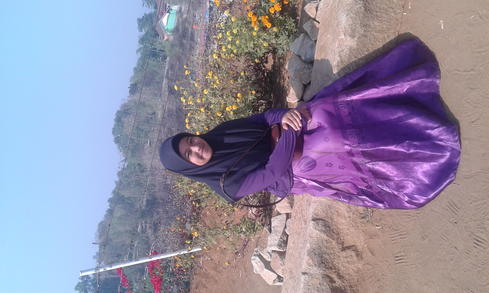

|  |
UMI NINGTYAS SANUSI |
|---|---|
|
Menu |
Nama : Umi Ningtyas Sanusi NIM : 12201804 Prodi : Teknik Informatika A2 Haiii, selamat datang di webpageku. Perkenalkan namaku Umi Ningtyas Sanusi biasanya dipanggil Umi hehe. Saat ini, aku tengah menempuh pendidikan di STMIK El Rahma Yogyakarta dengan jurusan Teknik Informatika. Aku lahir di Temanggung, 18 Juli 2002. Pasti sudah taukan umurku saat ini sudah 18 tahun. Aku lulusan dari Madrasah Aliyah Negeri 4 Sleman. Aku tinggal di DIY lebih tepatnya di Blekik, Sardonoharjo, Ngaglik, Sleman. Tepat tinggalku ini dekat pakem lhoo tidak jauh juga dari pasar pakemnya jadi mudah untuk menemukannya. Aku ini anak pertama dari 2 bersaudara. Adikku laki-laki namanya Ayatullah Isro' Sanusi saat ini ia tengah menempuh pendidikan di bangku SMA. Hobyku ialah membaca wattpad. |
| copyright ©2021 umingtys | |